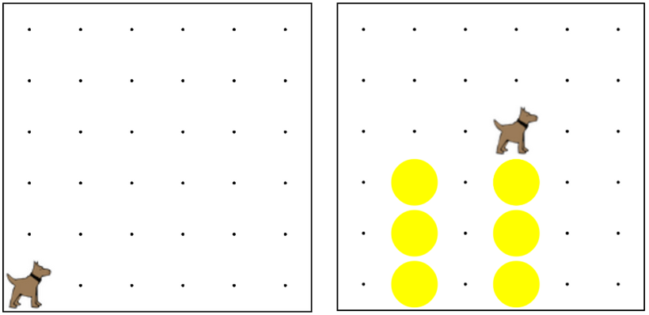

Take your two towers program from earlier, and make it work with superkarel.
This means you can get rid of your definition for turnRight.
把你的兩個塔樓程序從早期，並使其具有超級卡雷爾工作。這意味著你可以擺脫你的定義為右轉的。

for(var i = 0; i < COUNT; i++){ 對於（可變 i = 0; i < 算; i++){
/* Repeat code betweeen 之間的重複代碼
* brackets COUNT times */ 括號算時
}
/* Move ten times */ 移動十次
for(var i = 0; i < 10; i++){ 對於（可變 i = 0; i < 10; i++){
move(); 移動（）;
}
// For loops can have multiple lines in them!
for(var i = 0; i < 5; i++){ 對於（可變 i = 0; i < 5; i++){
move(); 移動（）;
putBall(); 放球（）;
}